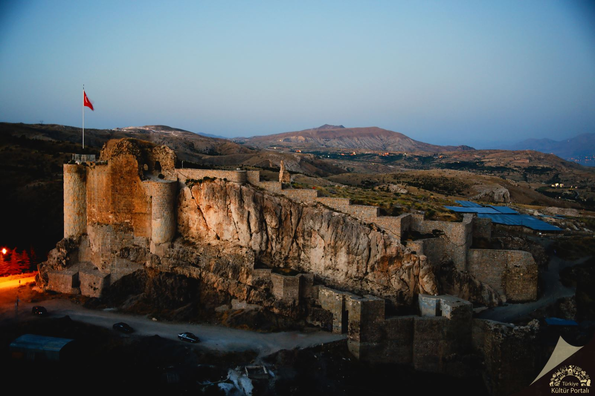

Harput Kalesi'nin Tarihi:
Harput Kalesi, Elazığ il sınırlarında yer alan ve şehri yüksekten görebileceğiniz tarihi bir yapıdır. Harput Kalesi, MÖ 8. yüzyıldan günümüze kadar farklı medeniyetler tarafından kullanılmıştır ve bu durum, kalenin tarih boyunca birçok farklı kültür ve medeniyet tarafından şekillendirilmesine olanak sağlamıştır.
Tarih Boyunca Kimler Yönetti?
- Urartular (MÖ 9. – 6. yüzyıl): Harput, ilk olarak Urartular tarafından surlarla çevrilmiş ve bölgenin savunma amaçlı kullanıldığı bir kale olarak inşa edilmiştir.
- Asurlar (MÖ 7. yüzyıl): Urartular’ın yıkılmasının ardından, Asurlar da Harput’u ele geçirmiş ve kale burada askeri bir üs olarak kullanılmıştır.
- Roma ve Bizans Dönemi (M.S. 1. – 11. yüzyıl): Harput, Roma ve Bizans İmparatorlukları döneminde stratejik bir kale olarak önemli bir yerleşim alanı olmuştur.
- Selçuklular (11. yüzyıl): Selçuklular, bölgeye geldiklerinde Harput Kalesi’ni yeniden güçlendirmişlerdir.
- Osmanlı Dönemi (15. yüzyıl – 19. yüzyıl): Osmanlı İmparatorluğu döneminde, Harput Kalesi önemli bir askeri ve idari merkez olmaya devam etmiştir.
Harput Kalesi'nde Bulunan Yapılar
- Kale Sur ve Kapıları: Harput Kalesi, dik kayalıklar üzerine inşa edilmiştir ve sağlam surları ile ünlüdür.
- Saray ve Zindanlar: Kalenin içinde bazı saray kalıntıları ve zindanlar da bulunmaktadır.
- Cami ve Mezarlıklar: Harput Kalesi’nin içinde bir cami (Harput Ulu Camii) ve etrafında mezarlık alanları da bulunmaktadır.
- Tarihi Su Depoları: Kalede, suyun sürekli sağlanabilmesi için yapılmış eski su depoları bulunmaktadır.
Harput Kalesi'nin Fotoğrafları:
